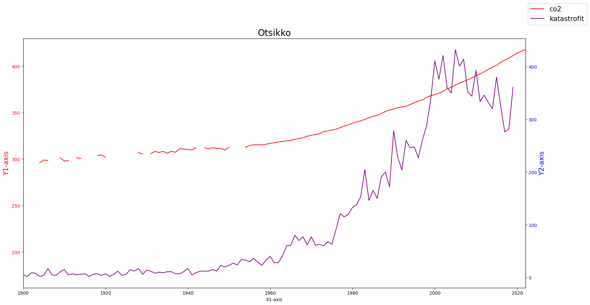

Maapallon ilmakehä ja sen hiilidioksidipitoisuus
Contents
Maapallon ilmakehä ja sen hiilidioksidipitoisuus#
Miten Maan ilmakehä on syntynyt? Minkälainen se on nykyään?#
Planeetta |
Ilmanpaine (bar) |
CO2 (%) |
O2 (%) |
N2 (%) |
H2O (%) |
Pintalämpötila (C) |
|---|---|---|---|---|---|---|
Venus |
92 |
96.5 |
hyvin vähän |
3.5 |
< 0.00003 |
464 |
Maa |
1 |
0.033 |
20 |
78 |
< 3 |
14 |
Mars |
0.006 |
95.3 |
hyvin vähän |
2.7 |
< 0.0001 |
-63 |
Maan ilmakehän hiilidioksidipitoisuus viimeisen 800 000 vuoden aikana#
import pandas as pd
import matplotlib.pyplot as plt
import numpy as np
ilmasto_data = pd.read_csv('https://raw.githubusercontent.com/opendata-education/Tyopajat/main/materiaali/data/ilmakehan_pitoisuudet.csv')
ilmasto_data.head(-1)
| Entity | Year | CO2 concentrations | CH4 concentrations | N2O concentrations | February | September | Mass U.S. glaciers | CSIRO | IAP | MRIJMA | NOAA | Snow cover | Sea surface temp | Sea surface temp (lower-bound) | Sea surface temp (upper-bound) | IAP.1 | NOAA.1 | MRIJMA.1 | Arctic sea ice | |
|---|---|---|---|---|---|---|---|---|---|---|---|---|---|---|---|---|---|---|---|---|
| 0 | Antarctica | 1979 | NaN | NaN | NaN | 1.212361 | 7.027059 | NaN | NaN | NaN | NaN | NaN | NaN | NaN | NaN | NaN | NaN | NaN | NaN | NaN |
| 1 | Antarctica | 1980 | NaN | NaN | NaN | 1.088808 | 7.266443 | NaN | NaN | NaN | NaN | NaN | NaN | NaN | NaN | NaN | NaN | NaN | NaN | NaN |
| 2 | Antarctica | 1981 | NaN | NaN | NaN | 1.108113 | 7.181500 | NaN | NaN | NaN | NaN | NaN | NaN | NaN | NaN | NaN | NaN | NaN | NaN | NaN |
| 3 | Antarctica | 1982 | NaN | NaN | NaN | 1.208500 | 7.084975 | NaN | NaN | NaN | NaN | NaN | NaN | NaN | NaN | NaN | NaN | NaN | NaN | NaN |
| 4 | Antarctica | 1983 | NaN | NaN | NaN | 1.185334 | 7.177639 | NaN | NaN | NaN | NaN | NaN | NaN | NaN | NaN | NaN | NaN | NaN | NaN | NaN |
| ... | ... | ... | ... | ... | ... | ... | ... | ... | ... | ... | ... | ... | ... | ... | ... | ... | ... | ... | ... | ... |
| 2773 | World | 2017 | 406.510000 | 1849.725000 | 329.750000 | NaN | NaN | NaN | NaN | 17.595567 | 15.742667 | 15.641767 | NaN | 0.64483 | 0.62200 | 0.66704 | 26.110967 | 21.280733 | 26.147333 | 4.82 |
| 2774 | World | 2018 | 408.520833 | 1857.425000 | 330.925000 | NaN | NaN | NaN | NaN | 17.630567 | 16.642667 | 16.485767 | NaN | 0.61641 | 0.59350 | 0.63888 | 25.426967 | 22.427733 | 26.827333 | 4.79 |
| 2775 | World | 2019 | 411.419167 | 1866.675000 | 331.883333 | NaN | NaN | NaN | NaN | 18.933567 | 17.872667 | 17.489767 | NaN | 0.71702 | 0.69317 | 0.73946 | 27.445967 | NaN | 28.777333 | 4.36 |
| 2776 | World | 2020 | 413.943333 | 1879.108333 | 333.033333 | NaN | NaN | NaN | NaN | 20.007567 | 18.082667 | 17.287767 | NaN | 0.70991 | 0.68467 | 0.73446 | 29.420967 | NaN | 29.277333 | 4.00 |
| 2777 | World | 2021 | 416.106667 | 1895.458333 | 334.325000 | NaN | NaN | NaN | NaN | NaN | NaN | NaN | NaN | 0.63219 | 0.60608 | 0.65442 | NaN | NaN | NaN | 4.92 |
2778 rows × 20 columns
ilmasto = ilmasto_data[(ilmasto_data['Entity']=='World')]
vuosi = ilmasto['Year']
co2 = ilmasto['CO2 concentrations']
plt.figure(figsize = (20, 10))
plt.plot(vuosi, co2)
plt.title('Otsikko')
plt.xlabel('x-akselin nimi')
plt.ylabel('y-akselin nimi')
plt.xticks(rotation=90)
#plt.xlim(-800000,2030)
plt.show()

Komennon XYZ avulla voit tarkastella erilaisia ajankohtia ylemmästä kuvaajasta. Käykää vieruskaverin kanssa läpi seuraavat kysymykset:
Millä tavalla CO2-pitoisuus on muuttunut viimeisen 2000 vuoden aikana?
Löydätkö kuvaajasta xlim-komennon vuosia vaihtamalla sen kohdan, milloin säännöllisten mittausten ottaminen on aloitettu?
Jos mietitään ajanjaksoa ennen 1800-lukua, mikä on ollut korkein CO2-pitoisuus viimeisen 800 000 vuoden aikana? Milloin tämä korkein lukema on ollut?
CO2-pitoisuus lähihistoriasta ja muut kasvihuonekaasut#
fossiiliset_polttoaineet_data = pd.read_csv('https://raw.githubusercontent.com/opendata-education/Tyopajat/main/materiaali/data/fossil-fuel-consumption-by-fuel-type.csv')
fossiiliset_polttoaineet = fossiiliset_polttoaineet_data[(fossiiliset_polttoaineet_data['Entity']=='World')]
fossiiliset_polttoaineet = fossiiliset_polttoaineet.reset_index(drop = True)
fossiiliset_polttoaineet.head()
yht = np.zeros(len(fossiiliset_polttoaineet))
fossiiliset_polttoaineet["Yht"] = yht
for i in range(len(fossiiliset_polttoaineet)):
fossiiliset_polttoaineet["Yht"][i] = (fossiiliset_polttoaineet['Gas Consumption - TWh'][i] + fossiiliset_polttoaineet['Coal Consumption - TWh'][i] + fossiiliset_polttoaineet['Oil Consumption - TWh'][i])
fossiiliset_polttoaineet.head()
/tmp/ipykernel_1799/1183836164.py:11: SettingWithCopyWarning:
A value is trying to be set on a copy of a slice from a DataFrame
See the caveats in the documentation: https://pandas.pydata.org/pandas-docs/stable/user_guide/indexing.html#returning-a-view-versus-a-copy
fossiiliset_polttoaineet["Yht"][i] = (fossiiliset_polttoaineet['Gas Consumption - TWh'][i] + fossiiliset_polttoaineet['Coal Consumption - TWh'][i] + fossiiliset_polttoaineet['Oil Consumption - TWh'][i])
| Entity | Code | Year | Gas Consumption - TWh | Coal Consumption - TWh | Oil Consumption - TWh | Yht | |
|---|---|---|---|---|---|---|---|
| 0 | World | OWID_WRL | 1965 | 6303.798828 | 16140.178711 | 17989.603516 | 40433.581055 |
| 1 | World | OWID_WRL | 1966 | 6868.794434 | 16324.093750 | 19341.146484 | 42534.034668 |
| 2 | World | OWID_WRL | 1967 | 7374.039551 | 16060.809570 | 20732.136719 | 44166.985840 |
| 3 | World | OWID_WRL | 1968 | 8044.331543 | 16301.146484 | 22488.332031 | 46833.810059 |
| 4 | World | OWID_WRL | 1969 | 8833.417969 | 16798.736328 | 24353.000000 | 49985.154297 |
# Raportoidut katastrofit
katastrofit_data = pd.read_csv('https://raw.githubusercontent.com/opendata-education/Tyopajat/main/materiaali/data/number-of-natural-disaster-events.csv')
katastrofit = katastrofit_data[(katastrofit_data['Entity']=='All natural disasters')]
katastrofit.head()
| Entity | Code | Year | Number of disasters (EMDAT (2020)) | |
|---|---|---|---|---|
| 0 | All natural disasters | NaN | 1900 | 5 |
| 1 | All natural disasters | NaN | 1901 | 2 |
| 2 | All natural disasters | NaN | 1902 | 9 |
| 3 | All natural disasters | NaN | 1903 | 8 |
| 4 | All natural disasters | NaN | 1904 | 2 |
metaani = ilmasto['CH4 concentrations']
typpi_oksidi = ilmasto['N2O concentrations']
fossiiliset_kulutus = fossiiliset_polttoaineet['Yht']
fossiiliset_vuosi = fossiiliset_polttoaineet['Year']
katastrofit_maara = katastrofit['Number of disasters (EMDAT (2020))']
katastrofit_vuosi = katastrofit['Year']
fig, ax1 = plt.subplots(figsize = (20,10))
#########
ax1.set_xlabel('X1-axis')
ax1.set_ylabel('Y1-axis', color = 'red', fontsize = 15)
ax1.tick_params(axis ='y', labelcolor = 'red')
ax2 = ax1.twinx()
ax2.set_ylabel('Y2-axis', color = 'blue', fontsize = 15)
ax2.tick_params(axis ='y', labelcolor = 'blue')
#########
ax1.plot(vuosi, co2, label = 'co2', color = 'red')
#ax2.plot(vuosi, metaani, label = 'metaani', color = 'blue') # metaanipitoisuuden yksikkö on ppb = parts per billion eli miljardisosa
#ax2.plot(vuosi, typpi_oksidi, label = 'typpioksidi', color = 'black') # typpi-oksidipitoisuuden yksikkö on ppb
#ax2.plot(fossiiliset_vuosi, fossiiliset_kulutus, label = 'fossiiliset', color = 'orange') # fossiilisten polttoaineiden kulutuksen yksikkö on TWh
ax2.plot(katastrofit_vuosi, katastrofit_maara, label = 'katastrofit', color = 'purple') # raportoidut katastrofit
#########
plt.xlim(1900,2022)
plt.title('Otsikko', fontsize = 20)
plt.figlegend(loc = "upper right", fontsize = 15)
plt.show()

Pohdi katastrofien lkm -kuvaajan luotettavuutta